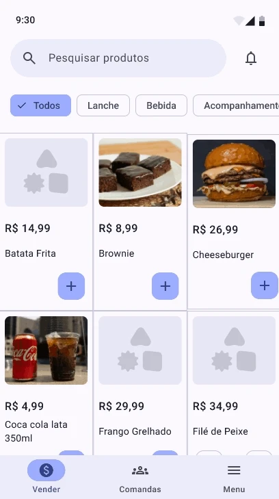
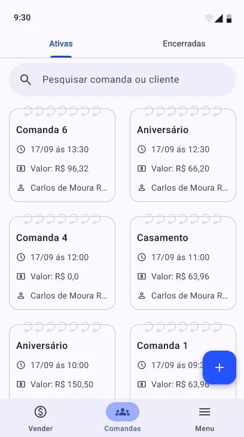
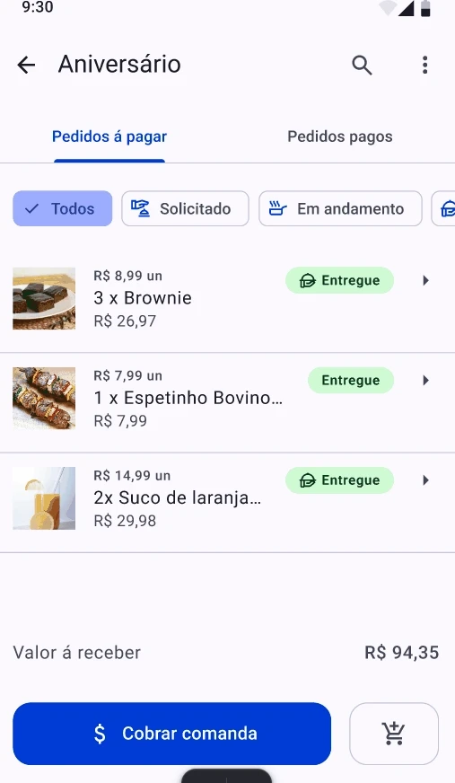
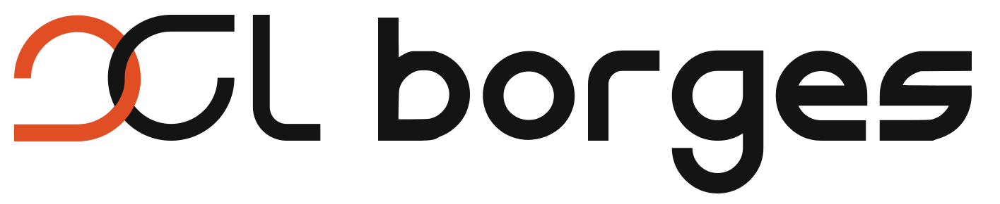

Sistema de vendas para maquininhas
Solução de PDV desenvolvida para rodar diretamente em maquininhas Android, centralizando pedidos e pagamentos em um único dispositivo.
44 dias
O problema
Estabelecimentos do setor alimentício ainda dependem de processos manuais, como papel para anotar comandas e cálculos no fechamento, gerando lentidão, erros e dificuldade na gestão de pagamentos parciais. Além disso, exigem múltiplos dispositivos (computador, celular e maquininha) para operar.
Pesquisa e descoberta
Desk Research & Benchmark
Analisei o ecossistema das principais adquirentes (Stone, PagBank e Cielo) e concorrentes diretos. Identifiquei como diferenciais competitivos obrigatórios a integração com iFood e o modo offline.
Personas
Criei perfis baseados em dados reais, dividi os perfis em três níveis de interação — Gestor, Operacional e Consumidor Final — para garantir que o sistema resolvesse gargalos em toda a jornada de serviço.
Mariana Souza, 29 anos
Mais detalhesMenos detalhes
Proprietária de loja de roupas e acessórios.
- Controlar estoque e fornecedores.
- Vender rápido e sem complicações.
- Acompanhar contas a pagar.
- Perde vendas por não ter reposição em tempo.
- Mistura de finanças pessoais e da loja.
- Falta de relatórios claros para decisões.
José Silva, 32 anos
Mais detalhesMenos detalhes
Vendedor de rua, trabalha em feirinhas e eventos.
- Vender em qualquer lugar com agilidade.
- Controlar estoque mínimo para reposição.
- Saber o que vende mais em cada evento.
- Fica sem controle quando os produtos acabam rápido.
- Dificuldade em organizar contas a pagar.
- Falta de clareza no ticket médio.
Juliana Ribeiro, 32 anos
Mais detalhesMenos detalhes
Consumidora que frequenta bares, restaurantes ou compra em lojas/ambulantes.
- Fazer pedidos de forma prática.
- Receber atendimento rápido e sem erros.
- Ter transparência no valor da conta.
- Demora para ser atendida.
- Confusão no fechamento da conta em grupo.
- Falta de informações no cardápio/produtos.
Decisões de design
O sistema foi projetado para rodar nativamente em Maquininha Smart POS, já que essas maquininhas utilizam o sistema operacional Android, adotamos o Design System: Material Design 3 (M3) para garantir uma interface intuitiva e familiar, reduzindo a curva de aprendizado.
A estratégia de design foi guiada por três pilares essenciais para otimizar a experiência:
Agilidade Operacional
Implementação de foco automático em campos de texto e abertura instantânea do teclado para reduzir toques.
Carrinho Dinâmico
Um botão flutuante que exibe o valor total e a quantidade de itens em tempo real, permanecendo acessível mesmo ao navegar em outros menus.

Prevenção de Erro
Alertas de confirmação para evitar cancelamentos acidentais e reduzir desperdícios.
Divisão automática da conta, sem necessidade de usar calculadora.


Testes de usabilidade
Testes com usuários do setor alimentício, validando fluxos como vendas, divisão de contas e cancelamentos.
Divisão de contas
A divisão de contas foi o principal destaque, eliminando o uso de calculadoras externas.
Feedback do usuário
“Tô achando ele bem prático e ágil. O fato de dividir a conta já no automático agiliza muito o dia a dia, não preciso de calculadora.”
Usuário operacionalMétricas
Facilidade de uso
Confiança

Hand off
O handoff para desenvolvimento foi realizado via Figma, com especificações técnicas que incluíam:
- Regras de negócio
- Parâmetros de textos dinâmicos e máscaras de input
- Fluxogramas de jornada (fluxo ideal e fluxos de erro)
passos
- Desenvolvimento do módulo de cozinha
- Implementação do modo offline
- Integração com plataformas de delivery (ex: iFood)
Consistência em uma transição tecnológica
Genesis é o Design System do Banco Bmg, responsável por padronizar componentes, tokens e diretrizes para o App em Flutter.

Estruturação da Jornada do FIDC
De processos manuais e fragmentados a uma visão estruturada e escalável
App BASF Agro
O BASF Agro é o aplicativo da BASF para quem trabalha no campo, com informações técnicas sobre cultivos, pragas e produtos. Na ioasys, atuei no redesign do app.

Central de Monitoramento
Central de Monitoramento é um projeto de retrofit que estrutura a experiência visual e informacional de uma central de monitoramento.

© 2026 XL Borges. Todos os direitos reservados · CNPJ 67.998.140/0001-71